<!doctype html public "-//w3c//dtd html 4.0 transitional//en">
<html>
<head><meta name="viewport" content="height=device-height,width=device-width">
   <meta http-equiv="Content-Type" content="text/html; charset=iso-8859-1">
   <meta name="Author" content="Jeffrey Mishlove">
   <meta name="GENERATOR" content="Mozilla/4.73 [en] (WinNT; I) [Netscape]">
   <title>The Roots of Consciousness: Folklore, Communication with Higher Intelligence</title>

<!-- google-analytics.com  START  (aync)-->
<script type="text/javascript">

  var _gaq = _gaq || [];
  _gaq.push(['_setAccount', 'UA-15825841-1']);
  _gaq.push(['_trackPageview']);

  (function() {
    var ga = document.createElement('script'); ga.type = 'text/javascript'; ga.async = true;
    ga.src = ('https:' == document.location.protocol ? 'https://ssl' : 'http://www') + '.google-analytics.com/ga.js';
    var s = document.getElementsByTagName('script')[0]; s.parentNode.insertBefore(ga, s);
  })();

</script>
<!-- google-analytics.com  END  -->

<!-- Histats.com  START  (aync)-->
<script type="text/javascript">var _Hasync= _Hasync|| [];
_Hasync.push(['Histats.start', '1,1087503,4,0,150,30,00000000']);
_Hasync.push(['Histats.fasi', '1']);
_Hasync.push(['Histats.track_hits', '']);
(function() {
    var hs = document.createElement('script'); hs.type = 'text/javascript'; hs.async = true;
    hs.src = ('http://s10.histats.com/js15_as.js');
    (document.getElementsByTagName('head')[0] || document.getElementsByTagName('body')[0]).appendChild(hs);
  })();</script>
<noscript><a href="http://www.histats.com" target="_blank"></a></noscript>
<!-- Histats.com  END  -->

</head>
<body>
&nbsp;
<center><table BORDER=0 COLS=1 WIDTH="600" >
<tr>
<td>
<center><font face="Arial,Helvetica"><font size=+2>Communication with Higher
Intelligence</font></font></center>

<p><font face="Arial,Helvetica">The notion of higher intelligences that
influence the affairs of the human race has an old and venerable tradition
and can be found in all religions.</font>
<p><font face="Arial,Helvetica">Ancient Sumeria, for example, is generally
regarded as the first major civilization. To Sumeria we owe the inventions
of the wheel, writing, arithmetic and geometry, and money. The Sumerian's
own legend, as recorded by the ancient historian Berosus around 400 B.C.,
is that the arts of civilization were taught to the savage inhabitants
of the fertile crescent region by an unknown creature who possessed superhuman
intelligence.</font>
<p><font face="Arial,Helvetica">There appeared, coming out of the sea where
it touches Babylonia, an intelligent creature that men called Oan[nes]
or Oe[s], who had the face and limbs of a man and who used human speech,
but was covered with what appeared to be the skin of a great fish, the
head of which was lifted above his own like a strange headdress. Images
are preserved of him to this day.</font>
<p><font face="Arial,Helvetica">This strange being, who took no human nourishment,
would pass entire days in discussions, teaching men written language, the
sciences, and the principles of arts and crafts, including city and temple
construction, land survey and measurement, agriculture, and those arts
which beautify life and constitute culture. But each night, beginning at
sundown, this marvelous being would return to the sea and spend the night
far beyond the shore. Finally he wrote a book on the origin of things and
the principles of government which he left his students before his departure.
The records add that during later reigns of the prediluvian kings other
appearances of similar beings were witnessed.</font>
<br>&nbsp;
<p><b><font face="Arial,Helvetica">Angels and Guardian Spirits</font></b>
<p><font face="Arial,Helvetica">St. Augustine (354-430 A.D.) described
in his City of God a very vivid picture of the evolution of the soul through
stages towards the heavenly kingdom. Like later church fathers, he proclaimed
that while magic was real, it was the work of the devil and therefore evil.
On the other hand, while he repudiated pagan magic, Augustine fervently
believed in the protection angels and guardian spirits would provide to
Christians:</font>
<blockquote><font face="Arial,Helvetica">They watch over and guard us with
great care and diligence in all places and at all hours, assisting, providing
for our necessities with solicitudes; they intervene between us and Thee,
0 Lord, Conveying to Thee our sighs and groans, and bringing down to us
the dearest blessings of Thy grace. They walk with us in all our ways;
they go in and out with us, attentively observing how we converse with
piety in the midst of a perverse generation, with what ardour we seek Thy
kingdom and its justice, and with what fear and awe we serve Thee. They
assist us in our labours; they protect us in our rest; they encourage us
in battle; they crown us in victories; they rejoice in us when we rejoice
in Thee; and they compassionately attend us when we suffer or are afflicted
for Thee.</font></blockquote>

<p><br><b><font face="Arial,Helvetica">The Glance of the Master</font></b>
<p><font face="Arial,Helvetica">The Sufi tradition, which originated in
Persia, involved singing, dancing and storytelling as techniques for exploring
the inner mind. Many of the wonders described in the Tales of the Arabian
Nights are of Sufi origin. Snake charming and fire-eating practices still
exist as testimony to the faith self-control of certain sufi mystics.</font>
<p><font face="Arial,Helvetica">One well-known Sufi was the Sheikh Shahab-el-Din.
Idries Shah relates the following story about him:</font>
<blockquote><font face="Arial,Helvetica">It is related of him that he once
asked the Sultan of Egypt to place his head in a vessel of water. Instantly
the Sultan found himself transformed into a shipwrecked mariner, cast ashore
in some totally unknown land.</font>
<p><font face="Arial,Helvetica">He was rescued by woodmen, entered the
nearest town (vowing vengeance against the Sheikh whose magic had placed
him in this plight) and started work there as a slave. After a number of
years he gained his freedom, started a business, married and settled down.
Eventually, becoming impoverished again, he became a free-lance porter,
in an attempt to support his wife and seven children.</font>
<p><font face="Arial,Helvetica">One day, chancing to be by the seashore
again, he dived into the water for a bath.</font>
<p><font face="Arial,Helvetica">Immediately he found himself back in the
palace at Cairo, again the King, surrounded by courtiers, with the grave-faced
Sheikh before him. The whole experience, though it had seemed like years,
had taken only a few seconds.</font></blockquote>
<font face="Arial,Helvetica">This application of the doctrine that "time
has no meaning to the Sufi" is reflected in a famous instance of the life
of Mohammed. It is related that the Prophet, when setting out on his miraculous
"Night Journey," was taken by the angel Gabriel to Heaven, to Hell and
to Jerusalem. After four-score and ten conferences with God, he returned
to earth just in time to catch a pot of water that had been overturned
when the angel took him away.</font>
<p><font face="Arial,Helvetica">The Sufis loved to tell such stories. Their
traditions seem to be a mixture of teaching stories in the genre of <i>Aesop's
Fables</i> and the <i>Tales of the Arabian Knights</i> with a very profound
understand of methods for transforming human nature.</font>
<p><font face="Arial,Helvetica">Irina Tweedie, is author of <i>Daughter
of Fire</i>, a diary of five intensive years of spiritual training in India
with a Sufi master. In the following excerpt of my <i>Thinking Allowed</i>
interview with her, she describes aspects of her spiritual training which
suggest that some ancient techniques have survived to the present day.</font>
<center>
<p>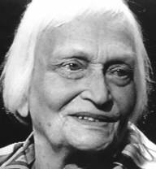
<br><b><font face="Arial,Helvetica"><font size=-1>Irina Tweedie</font></font></b>
<br><font face="Arial,Helvetica"><font size=-2>(courtesy <a href="http://www.thinkingallowed.com/" >Thinking
Allowed Productions</a>)</font></font></center>

<p><font face="Arial,Helvetica">She refers to what the Sufis call the glance
-- the unanticipated look of the guru that affects one profoundly. At that
moment, one realizes their connection with that teacher:</font>
<blockquote><font face="Arial,Helvetica">According to the Sufi tradition,
the moment the teacher looks at you for the first time, you are born again.&nbsp;</font></blockquote>
<font face="Arial,Helvetica">I was struck by the many doubts which Mrs.
Tweedie experienced during her period of Sufi training. She seemed to alternate
between moments of great peace and moments of the most profound inner torture:</font>
<blockquote><font face="Arial,Helvetica">I remember at the end I was suicidal.
I decided to throw myself from the bridge, at Kampur, the city where my
teacher lived. It was on the Ganges which is deep. So I thought, "Well,
it won't hurt very much."&nbsp;</font>
<p><font face="Arial,Helvetica">He seemed to know my thoughts, because
suddenly he turned to me. He was sitting in the garden, and I was so disgusted
I didn't want to look at him. He said, "Mrs. Tweedie, look at me." So I
looked at him. I sort of -- aahhh! He was full of blinding light. I sort
of just looked, speechless. And he said, "Mrs. Tweedie, do you think I
would waste my powers if you really were hopeless?" And perhaps half a
day before he had told me that I was utterly hopeless.</font></blockquote>
<font face="Arial,Helvetica">This particular teacher seemed to be acting
in an irrational manner, apparently to help his student "stop her mind,"
to get her outside of her conditioned intellect. This is sometimes referred
to as the tradition of crazy wisdom. The purpose of the teaching is not
so much to instruct people about it, because there are many books, but
to lead people to it.</font>
<p><font face="Arial,Helvetica">Robert Frager, founder of the California
Institute of Transpersonal Psychology, is on the faculty of the Institute
for Creation Spirituality at Holy Names College.&nbsp;</font>
<center>
<p>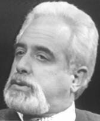
<br><b><font face="Arial,Helvetica"><font size=-1>Robert Frager</font></font></b>
<br><font face="Arial,Helvetica"><font size=-2>(courtesy <a href="http://www.thinkingallowed.com/" >Thinking
Allowed Productions</a>)</font></font></center>

<p><font face="Arial,Helvetica">He is the coauthor of <i>Personality and
Personal Growth</i>. A fifth-degree black belt of Aikido, he was a student
of Osensei, the original founder of Aikido. He is also a Sufi sheik. In
the following excerpt from my <i>Thinking Allowed</i> interview with him
he describes his first encounter with a Sufi teacher which is very much
reminiscent of Irina Tweedie's description of the glance:&nbsp;</font>
<blockquote><font face="Arial,Helvetica">I was sitting in my office at
the California Institute of Transpersonal Psychology, with my feet up on
my desk, talking on the phone to someone about something administrative.
Two of my colleagues had invited a Sufi group to come talk at the school
for a few days; and a heavy-set Turkish man walked by my office and looked
at me.</font>
<p><font face="Arial,Helvetica">The look must have taken a half a second
at most. He did not break stride. He did not stop and stare. But the moment
he looked at me, time stood still, absolutely. Time stopped for me, and
I had this impression that all the data of my life was being read into
a high-speed computer -- that he somehow knew everything that led up to
my being in that office with my feet on the desk.&nbsp;</font>
<p><font face="Arial,Helvetica">Many years later, someone else in another
Sufi tradition, when I mentioned this story, said, "My God, that's a perfect
description of what we call the look of the sheik. That itself is an initiation
at some level."&nbsp;</font>
<p><font face="Arial,Helvetica">I suddenly found myself sitting at mealtime
with this man, and then he started telling stories, and it was as though
no one had ever told spiritual stories before. The stories just knocked
me over -- the power, the wisdom. It felt as though there was no one else
in the room, that he was literally telling the stories just to me, and
that they were all designed for me. And then after the stories were over
I glanced around and I said, "My goodness, there are other people here
too."&nbsp;</font></blockquote>
<font face="Arial,Helvetica">I asked Dr. Frager if a cynic might not say
at this point that even a sophisticated professor like himself could become
hypnotized. He responded that it was more like falling in love, in a Platonic
sense, with the teacher. The essence of the practice is one of opening
the heart.</font>
<p><font face="Arial,Helvetica">The practice of devotion to a guru originated
in the Hindu Bhakti Yoga tradition. The guru is said to communicate higher
states of consciousness through his or her very presence or being. Certain
gurus, with thousands of western devotees, currently encourage their disciples
to practice this method. They include Gurumayi Chidvilasananda and Da Love-Ananda,
both of whom claim to have received confirmation of their spiritual attainment
from Swami Muktinanda.</font>
<center>
<p>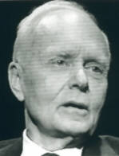
<br><b><font face="Arial,Helvetica"><font size=-1>Joseph Chilton Pearce,
reknowned author of <i>Crack in the Cosmic Egg</i></font></font></b>
<br><b><font face="Arial,Helvetica"><font size=-1>and <i>Magical Child</i>,
is a devotee of Gurumayi Chidvilasananda</font></font></b>
<br><font face="Arial,Helvetica"><font size=-2>(courtesy <a href="http://www.thinkingallowed.com/" >Thinking
Allowed Productions</a>)</font></font></center>

<p><font face="Arial,Helvetica">Space does not permit extensive comments
on this modern manifestation of an ancient tradition. It is worth noting,
however, that press scrutiny of virtually all contemporary claimants to
various degrees of divine or holy stature strongly suggest, if one is willing
to make conventional judgments, that such guru figures have failed to maintain
an unwavering state of higher consciousness. Many claimants to a state
of higher consciousness -- including Maharishi Mahesh Yogi, Bhagwan Rajneesh
and Swami Muktinanda -- have been reported to have feet of clay., Of course,
such individuals can be effective teachers. However, if a guru encourages
the worship of devotees, a prospective disciple would be wise to consider
the effect that the human flaws of the master may have on such a practice.</font>
<p><font face="Arial,Helvetica">Da Love-Ananda (also known as Da Free John
and Adida), a western seeker formerly named Franklin Jones, has become
a prolific writer on the "great tradition" of spiritual seeking, as well
an individual whose claim to having attained the highest state of awareness
is viewed seriously by many scholars. {II-68-B}&nbsp;</font>
<center>
<p>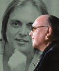
<br><b><font face="Arial,Helvetica"><font size=-1>Adida</font></font></b></center>

<p><font face="Arial,Helvetica">For several years, he has been compiling
an annotated bibliography of spiritual literature, organized according
to his own system which views the spiritual journey as a process of seven
stages. Several of Da Love-Ananda's other books attempt to explicate the
telepathic processes by which a spiritual master interacts with devotees.</font>
<br>&nbsp;
<p><b><font face="Arial,Helvetica">Cabala</font></b>
<p><font face="Arial,Helvetica">Cabala is the word for the Jewish mystical
tradition that acknowledges the personal experience of the absolute. The
tree of life diagram shows the ten emanations of god that are the attributes
of both humanity and the universe. In later occult systems the tree of
life was used as a philosophical basis for integrating the tarot cards
with astrology as well as a guide for meditation and reveries. In these
ecstatic states one progressed through a hierarchy of visions that lead
to ultimate mystical union. One might say the tree of life served as a
very sophisticated map of the inner spaces through which consciousness
progresses.</font>
<p><font face="Arial,Helvetica">One of the most sophisticated interpretations
of Cabala is that offered by Stan Tenan of the MERU Foundation.&nbsp;</font>
<center>
<p>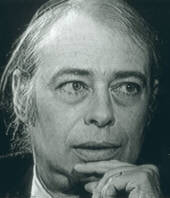
<br><b><font face="Arial,Helvetica"><font size=-1>Stan Tenen</font></font></b>
<br><font face="Arial,Helvetica"><font size=-2>(courtesy <a href="http://www.thinkingallowed.com/" >Thinking
Allowed Productions</a>)</font></font></center>

<p><font face="Arial,Helvetica">Tenan maintains that the Cabalists discovered
in the ancient languages a schematic for the unfolding of the universe
from unity to multiplicity. This schematic, he maintains, is isomorphic
to ideas that are currently being generated in contemporary cosmology.</font>
<br>&nbsp;
<p><b><font face="Arial,Helvetica">Emmanuel Swedenborg</font></b>
<center>
<p>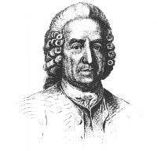</center>

<p><font face="Arial,Helvetica">Emanuel Swedenborg (1688-1772) the single
individual who combined within himself the most intense spiritualistic
exploration with the most sophisticated scientific expertise was born the
son
of a devout Swedish bishop whose family was ennobled by the King when he
was thirty-one. Being the eldest son, Baron Emmanuel Swedenborg took a
position in the Swedish House of Nobles.</font>
<p><font face="Arial,Helvetica">During his long life Swedenborg published
scientific papers on a wide variety of topics. They include soils and muds,
stereometry, echoes, algebra and calculus, blast furnaces, astronomy, economics,
magnetism, and hydrostatics. He founded the science of crystallography
and was the first to formulate the nebular hypothesis of the creation of
the universe. He spent many years exploring human anatomy and physiology
and was the first to discover the functions of the ductless glands and
the cerebellum.</font>
<p><font face="Arial,Helvetica">In addition to mastering nine languages,
he was an inventor and a craftsman. He built his own telescope and microscope.
He designed a submarine, air pumps, musical instruments, a glider and mining
equipment. Throughout his life he worked as a mining assessor in Sweden.
He participated in the engineering of the world's largest dry dock. He
developed an ear trumpet, a fire extinguisher, and a steel rolling mill.
He learned bookbinding, watchmaking, engraving, marble inlay, and other
trades. At one point he engineered a military project for the King of Sweden
which transported small battleships fourteen miles over mountains and through
valleys. At the age of fifty-six, Swedenborg had mastered the known natural
science of his day and stood at the brink of his great exploration of the
inner worlds.</font>
<p><font face="Arial,Helvetica">He began by surveying all that was understood
by scholars in the area of psychology and published this in several volumes
along with some observations of his own. Then he started writing down and
interpreting his own dreams. He developed yoga-like practices of suspending
his breathing and drawing his attention inward, thus enabling him to observe
the subtle symbol-making processes of his mind. He carefully probed the
hypnogogic state, the borderland between sleep and waking in which the
mind forms its most fantastic imagery.</font>
<p><font face="Arial,Helvetica">As he intensified this process he gradually
began to sense the presence of other beings within his own inner states.
Such a sensation is common to the hypnogogic state.87 However for Swedenborg,
these occasional glimpses into another world came to full fruition quite
suddenly in April of 1744. From that time until his death, twenty-seven
years later, he claimed to be in constant touch with the world of spirits.
During his waking hours he regularly probed the vast regions of heaven
and hell and engaged in long and detailed conversations with angels and
spirits.</font>
<p><font face="Arial,Helvetica">The following passages provide us with
a typical example of Swedenborg's later thought:</font>
<blockquote><font face="Arial,Helvetica">OF THE SPEECH OF SPIRITS AND ANGELS</font>
<p><font face="Arial,Helvetica">The discourse or speech of spirits conversing
with me, was heard and perceived as distinctly by me as the discourse or
speech of men; nay, when I have discoursed with them whilst I was also
in company with men, I also observed, that as 1 heard the sound of man's
voice in discourse, so I heard also the sound of the voice of spirits,
each alike sonorous; insomuch that the spirits sometimes wondered that
their discourse with me was not heard by others; for, in respect to hearing
there was no difference at all between the voices of men and spirits. But
as the influx into the internal organs of hearing is different from the
influx of man's voice into the external organs, the discourse of the spirits
was heard by none but myself, whose internal organs, by the divine mercy
of the Lord, were open. Human speech or discourse is conveyed through the
ear, by an external way, by the medium of the air; whereas the speech or
discourse of spirits does not enter through the ear, nor by the medium
of the air, but by an internal way, yet into the same organs of the head
or brain. Hence the hearing in both cases is alike.</font>
<p><font face="Arial,Helvetica">The words which spirits utter, that is,
which they excite or call forth out of a man's memory, and imagine to be
their own, are well chosen and clear, full of meaning, distinctly pronounced,
and applicable to the subject spoken of; and, what is surprising, they
know how to choose expressions much better and more readily than the man
himself; nay, as was shown above, they are acquainted with the various
significations of words, which they apply instantaneously, without any
premeditation; by reason, as just observed, that the ideas of their language
flow only into those expressions which are best adapted to signify their
meaning. The case, in this respect, is like that of a man who speaks without
thinking at all about his words, but is intent only on their sense; when
his thought falls readily, and spontaneously, into the proper expressions.
It is the sense inwardly intended that calls forth the words. In such inward
sense, but of a still more subtle and excellent nature, consists the speech
of spirits, and by which man, although he is ignorant of it, has communication
with them.</font>
<p><font face="Arial,Helvetica">The speech of words, as just intimated,
is the speech proper to man; and indeed, to his corporeal memory: but a
speech consisting of ideas of thought is the speech proper to spirits;
and, indeed, to the interior memory, which is the memory of spirits. It
is not known to men that they possess this interior memory, because the
memory of particular or material things, which is corporeal, is accounted
every thing, and darkens that which is interior: when, nevertheless, without
interior memory, which is proper to the spirit, man would not be able to
think at all. From this interior memory I have frequently discoursed with
spirits, thus in their proper tongue, that is, by ideas of thought. How
universal and copious this language is may appear from this consideration,
that every single expression contains an idea of great extent: for it is
well known, that one idea of a word, may require many words to explain
it, much more the idea of one thing; and still more the idea of several
things which may be collected into one compound idea, appearing still as
a simple idea. From these considerations may appear what is the natural
speech of spirits amongst each other, and by what speech man is conjoined
with spirits.</font></blockquote>
<font face="Arial,Helvetica">It is tempting to think Swedenborg went insane
at this point. However he otherwise showed no signs of mental weakness.
He continued to serve as a mining assessor, for instance, throughout his
life. Yet, during this twenty-seven year period he wrote some 282 works
in the above manner describing his inner explorations. {II-71}</font>
<p><font face="Arial,Helvetica">When asked how he could write so much,
he casually answered that it was because an angel dictated to him. Numbers
of people witnessed him speaking with invisible figures, yet he could always
be interrupted in the midst of these states to deal with a visitor or a
business matter.</font>
<p><font face="Arial,Helvetica">He described the world to which we all
go after death like a number of different spheres representing various
shades of light and happiness, each soul going to that for which his spiritual
evolution has fitted him. The light of higher states seems painful and
blinding to one who is not yet ready. These spheres resembled the earthly
society that Swedenborg knew. His descriptions of life in the spheres are
written with the careful mind of a scientist. He speaks of the architecture,
the flot2s and fruits, the science, the schools, the museums the libraries
and the sports.</font>
<p><font face="Arial,Helvetica">The great German philosopher Emmanuel Kant
set about to examine the Swedenborg phenomena with an aim toward discrediting
them. However Kant himself was at a loss to explain the well-reported incident
in 1756, when Swedenborg, then in Gottenburg, clairvoyantly saw a fire
raging three hundred miles away in Stockholm. This incident occurred in
front of fifteen very distinguished observers.</font>
<p><font face="Arial,Helvetica">Due to the voluminous quantity of his erudite
writings, Swedenborg's popularity has not been large among the general
population. Often, his spiritual visions do seem to degenerate into arbitrary
theological interpretations of scripture. After his death, the Church of
the New Jerusalem was founded to preserve his teachings, which can be found
in the encyclopedic Heaven and Hell, The New Jerusalem and the Arcana Coelestia
as well as in several excellent biographies.</font>
<p><font face="Arial,Helvetica">Swedenborg's thought was to exert a particular
influence on two of Europe's great artistic geniuses, William Blake (1757-
1827) and Johann Wolfgang von Goethe (1749-1832).</font>
<br>&nbsp;
<p><b><font face="Arial,Helvetica">Gustav Theodor Fechner and Psychophysics</font></b>
<p><font face="Arial,Helvetica">Until the middle of the nineteenth century,
there was no recognized branch of experimental science whose domain of
exploration was man's psyche. While there was generally a strong public
interest in the researches of Mesmer and Reichenbach, there were no trained
academicians or established professionals who were competent to research
and judge extraordinary claims. Psychology was thought of as a branch of
philosophy, until the pioneering research of Gustav Theodor Fechner (1801-1887)
established psychology as `n independent branch of science.</font>
<p><font face="Arial,Helvetica">Fechner's formal training lay in medicine
and physics. Like the ancient shamans he showed a natural sensitivity to
the subtle levels of his own inner world that he could not suppress. Writing
under the pseudonym of Dr. Mises, he published a number of works both satirical
and symbolic. His biographer, Dr. G. Stanley Hall, describes one of these
books, written in 1825, entitled <i>Comparative Anatomy of the Angels</i>:</font>
<center>
<p>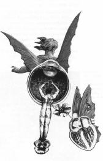</center>

<blockquote><font face="Arial,Helvetica">These are not symbolic, but real,
living angels, which stand in the organic world a little higher than man,
who is not the highest nor the most beautiful. Even the ass thinks his
own type ideal. The human form is a strange aggregate of surfaces and curves,
hollows and elevations. There are no flat surfaces and therefore curves
and specifically the sphere are the ideal forms and these change (as, indeed,
Plato had said). The parts of man's body are beautiful as they approach
it, but the eyeball is most complete. It is the organ of light and in light
angels live. Earth is not their fitting residence. They belong to higher
bodies like the sun, the stars, or light. Just as the air is the element
of the angels, who are simply free and independent eyes, all eye, or the
eye-type in its highest and most beautiful development. Thus, what in man
is a subordinate organ, in the angels is of independent worth. In animals
the eyes look backward or sideward, whereas in man they look forward. But
angels are single eyes. Their language is light and their tones are colors.
The eye-language of love hints at the speech of angels, these creatures
of the sun with their ethereal bodies. Their skin is merely connected vapors,
like soap bubbles. Their transparent nature can take on colors. They change
their form and expand and contract according to their feelings. They are
attraction or repulsion, and with this goes the wonderful color play. They
are organisms. They move by hovering and sweeping along. General gravitation,
which relates all bodies, is their sense. They feel the farthest thing
in the universe and the slightest change in it.s They are, in short, living
planets and, in fine, the planets are angels.</font></blockquote>
<font face="Arial,Helvetica">In his search for the archetypal form of angels,
Fechner's work can be seen as in the scientific tradition of Goethe, his
countryman, who attempted to reconcile science and poetry. In his perception
of the earth and planets as living organisms, he is bearing witness to
the ancient esoteric teachings.</font>
<p><font face="Arial,Helvetica">One of the defining characteristics of
Fechner's life is that he suffered a disease very much akin to the initiatory
sickness known among shamans. In 1840 his eyesight began to fail him. Soon
he could neither read nor write. He found he could not eat or drink and
he was unable to endure society. He lost all control over his thoughts
or his attention. His dreams tormented him. His own state seemed to him
like the condition of a puppet. By the end of 1843, people believed him
to be incurably blind and completely insane. He spent months in solitude
in a dark room; and at a level deep within himself he never lost hope.
It was in this state, literally the dark night of his soul, he felt he
was called upon by God to do extraordinary things for which his sufferings
had prepared him. He recovered after this self-perception and soon discovered
within himself even greater physical strength and psychic sensitivity.
The whole world now revealed itself to him in a splendor and detail exceeding
his earlier visions. He resumed his academic work, no longer in physics
but as a philosopher.</font>
<p><font face="Arial,Helvetica">This work led to some very cogent philosophical
explorations into the nature of consciousness itself and from there to
his pioneering experimental work in psycho-physics:</font>
<p><font face="Arial,Helvetica">As to the origin of consciousness, we have
a series of thresholds, upper and lower waves. The highest consciousness
is God, who planned vaguely at first and is realizing his purpose in all
the world processes, so that his plan progresses and becomes more definite
and conscious. Thus, as Paracelsus and Jacob Boehme thought, God is growing
in our experience, which, as it gives him character, also contributes to
his consciousness and adds to his achievements. God comes to consciousness
in us....</font>
<p><font face="Arial,Helvetica">Life and consciousness never arose, he
said, but are original activities of the universe; they are two expressions
of the same thing and differ only as a circle seen from within differs
from one seen from without. From without all is manifold, from within all
is unity, and both together constitute all there is. The soul is not punctual
but is pervasive throughout all the body. Those processes immediately bound
up with consciousness are psycho-physic movements and they are primordial
and cosmogonic.</font>
<p><font face="Arial,Helvetica">The physical world operates under one law
and we must assume that the spiritual world is no less so. There must be
then, a priori, some exact mathematical relationship between the physical
and the psychical, some law of concomitant variations, for all that is
psychic is but the self-appearance of the physical; a material process
runs parallel to every conscious process.&nbsp;</font>
<p><font face="Arial,Helvetica">This Pythagorean insight as to the mathematical
relationship between the physical and psychic worlds led directly to the
development of modern, scientific psychology. In all fairness, however,
to contemporary psychologists, most are ignorant of Fechner's mystical
background -- and would probably be shocked by it.&nbsp;</font>
<br>&nbsp;
<p><b><font face="Arial,Helvetica">The Theosophical Society</font></b>
<p><font face="Arial,Helvetica">A most intriguing chapter in consciousness
history involves the Theosophical Society, founded in 1875 by Madame Helena
Petrovna Blavatsky (H. P. B. for short), a most notorious character.</font>
<center>
<p>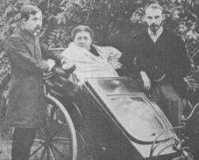
<br><b><font face="Arial,Helvetica"><font size=-1>Madame Blavatsky in perambulator,
attended by two students&nbsp;</font></font></b>
<br><b><font face="Arial,Helvetica"><font size=-1>James M. Pryse (left)
and G. R. S. Mead (right)</font></font></b></center>

<p><font face="Arial,Helvetica">Madame Blavatsky declared herself to be
a chela or disciple of a brotherhood of spiritual adepts in Tibet whose
members had acquired psychic powers beyond the reach of ordinary men. She
asserted that they took a special interest in the Theosophical Society
and all initiates of occult lore, being able to communicate intelligently
with individuals by visiting them in a phantom or astral form. These beings
were called the Mahatmas and are described in Blavatsky's book Isis Unveiled:</font>
<blockquote><font face="Arial,Helvetica">Travelers have met these adepts
on the shores of the sacred Ganges, brushed against them on the silent
ruins of Thebes, and in the mysterious deserted chambers of Luxor. Within
the halls upon whose blue and golden vaults the weird signs attract attention,
but whose secret meaning is never penetrated by idle gazers, they have
been seen, but seldom recognized. Historical memoirs have recorded their
presence in the brilliantly illuminated salons of European aristocracy.
They have been encountered again on the arid and desolate plains of the
Great Sahara, or in the caves of Elephanta. They may be found everywhere,
but they make themselves known only to those who have devoted their lives
to unselfish study and are not likely to turn back.</font></blockquote>
<font face="Arial,Helvetica">According to William Q. Judge, a New York
lawyer who was one of the co-founders of the Theosophical Society, such
a Mahatma appeared to the first Theosophists when they held a meeting to
frame their constitution. A "strangely foreign Hindoo," came before them,
left a package and vanished. On opening the package they found the necessary
forms of organization, rules, etc., that were adopted. The early history
of the society was based largely on such miracles. Blavatsky's wonderworking
and teaching attracted such notable students as Thomas Edison, Sir William
Crookes, Alfred Russell Wallace, British Prime Minister William Gladstone,
Alfred Tennyson, and later U. S. Vice-president Henry Wallace and Annie
Besant (the former mistress of George Bernard Shaw, who succeeded Blavatsky
as head of the movement).</font>
<p><font face="Arial,Helvetica">After seeing the Society well established
in New York, Madame Blavatsky moved to India. Marvelous phenomena of an
occult nature were alleged to have taken place there at the Adyar headquarters.
Mysterious, ghostly appearances of Mahatmas were seen, and messages were
constantly received by supernatural means. One of the apartments, named
the Occult Room in the headquarters, contained a sort of cupboard against
the wall, known as the Shrine. Ghostly letters from the Mahatmas were received
in this shrine, as well as sent. Skeptics were convinced and occult lodges
spread rapidly. Madame Blavatsky and other Theosophists were interviewed
in England by members of the SPR who were favorably impressed.</font>
<p><font face="Arial,Helvetica">At this point in 1884, a scandal broke
out. Two members of Blavatsky's staff claimed they had conspired with Madame,
forging Mahatma letters and placing them in the shrine P`rough a trap door.
To back up their claim, they submitted private correspondences from H.
P. B. Blavatsky countered with charges of her own. Leaders of the SPR considered
the matter significant enough to send Richard Hodgson to India in order
to personally investigate the matter. What followed was perhaps the most
complicated and confused investigation in the history of psychical research.</font>
<p><font face="Arial,Helvetica">Hodgson concluded Madame Blavatsky was
a phony -- "one of the most accomplished, ingenious, and interesting imposters
of history." His 200 page report attempted to reconstruct in detail all
of the mechanisms by which she impersonated every sort of phenomena. He
hired handwriting experts, for example, who determined the Mahatma letters
were really written in Madame's handwriting. Most of the evidence was of
a circumstantial nature as the original shrine had been destroyed by the
time Hodgson had arrived at Adyar.</font>
<center>
<p>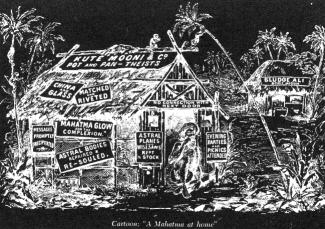</center>

<p><font face="Arial,Helvetica">More recently, Theosophical apologist Victor
Endersby has written a book challenging the Hodgson report point for point.
Endersby cites independent testimony from handwriting experts who clearly
disagree with those hired by Hodgson.</font>
<p><font face="Arial,Helvetica">The Theosophical Society is still active.
The teachings of the Theosophists continue to have an enormous impact on
the esoteric folklore of western culture and for that reason are quoted
several times in this book.</font>
<br>&nbsp;
<p><b><font face="Arial,Helvetica">A Course in Miracles</font></b>
<p><font face="Arial,Helvetica">Since the original publication of <i>The
Roots of Consciousness</i>, there have emerged numerous examples of ostensible
contact with higher intelligence. One of the foremost among these is <i>A
Course in Miracles</i>, which is a system of spiritual transformation.
Hundreds of thousands of individuals have used this material; and its emphasis
on love, foregiveness and freedom from guilt have had an influence on a
new generation of spiritual seekers comparable to that of the Theosophical
Society in previous years. <i>A Course in Miracles</i> suggests that a
miracle is really a shift in perception -- to see the spirit that lies
behind all forms.</font>
<p><font face="Arial,Helvetica">Judith Skutch Whitson, is the president
of the Foundation for Inner Peace, the organization which published <i>A
Course in Miracles</i>.</font>
<center>
<p>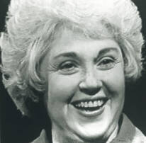
<br><b><font face="Arial,Helvetica"><font size=-1>Judith Skutch Whitson</font></font></b>
<br><font face="Arial,Helvetica"><font size=-2>(courtesy <a href="http://www.thinkingallowed.com/" >Thinking
Allowed Productions</a>)</font></font></center>

<p><font face="Arial,Helvetica">In the following excerpt from a <i>Thinking
Allowed</i> interview, she describes the origins of this material:</font>
<blockquote><font face="Arial,Helvetica">In 1975, I met William Thetford
and Helen Suchman, two medical psychologists at Columbia Presbyterian School
of Physicians and Surgeons, who served as scribes for the material. The
way it came to them was through their relationship. They had had a very
long period together, teaching, researching, writing grant proposals; yet
their life together and among their faculty was not very harmonious. They
described it as one of the most stress-filled domains in the world -- academia,
medical academia.&nbsp;</font>
<p><font face="Arial,Helvetica">One day the quieter of the two of them,
Bill Thetford, who was a very gentle man, a very thorough scientist, a
very solid person -- he just blew up. He said in a very meaningful way
to her, so that she heard him, that he was sick and tired of the attitudes
that that stress seemed to have promoted between the two of them, and that
they just were not getting along, that there had to be a better way to
live in the world.</font>
<p><font face="Arial,Helvetica">There had to be a better way, and he was
determined to find it. Instead of laughing at him -- because she was quite
an acerbic woman, very sharp, the older of the two of them by fourteen
years -- she actually took his hand, and she said, "You know, Bill, I think
you are right. I do not know what the better way could be, but I will help
you find it."&nbsp;</font>
<p><font face="Arial,Helvetica">Two people joined to find a better way
of being in the world -- in other words, to heal their relationship. Not
too long after, Helen started to experience what she called heightened
visual imagery which gave her the feeling that there was something within
her catching her attention and very gently taking her along the way, through
experience, to an opening up. After many of these visions, she started
to become very familiar with an inner voice which spoke with a gentleness
and yet an authority she could not avoid listening to.&nbsp;</font>
<p><font face="Arial,Helvetica">One day, she was at home, unable to sleep,
and she was actually feeling, hearing the words: "This is a course in miracles.
Please take notes."&nbsp;</font>
<p><font face="Arial,Helvetica">She did not know what to do. That was quite
startling. She called up Bill on the phone, and she said, "You know that
voice I told you about? It will not go away, and it is saying something
very peculiar."&nbsp;</font>
<p><font face="Arial,Helvetica">He said, "What is it saying?" And she told
him: "This is a course in miracles. Please take notes."&nbsp;</font>
<p><font face="Arial,Helvetica">He is a very pragmatic fellow. He said,
"Well, you've been having interesting experiences which I've been taking
down so we have a record of them. Why don't you just do what it says? You
take very fast shorthand. Why don't you just do it?"&nbsp;</font>
<p><font face="Arial,Helvetica">So she did, and what she took down startled
her a great deal, but the next morning she brought it into the office.
Before the staff came in, they locked the door and pulled down the shades
so no one should catch them at this. She actually read from her notebook
to him what she had taken down, and he typed it up. It was an introduction
to A Course in Miracles.&nbsp;</font>
<p><font face="Arial,Helvetica">It said: "This is a required course; only
the time you take it is voluntary. Free will does not mean you can establish
the curriculum, only the time in which you need to take it."&nbsp;</font>
<p><font face="Arial,Helvetica">It said the opposite of love is fear, but
what is all-encompassing can have no opposite. It also said the course
could be summed up very simply this way: "Nothing real can be threatened,
and nothing unreal exists. Herein lies the peace of God."</font>
<p><font face="Arial,Helvetica">Well, she was threatened. At that time
she called herself a militant atheist, and he was an agnostic, and here
was something that mentioned G-O-D, and it just was not in her vocabulary.&nbsp;</font>
<p><font face="Arial,Helvetica">So he convinced her that it was beautifully
written, and whatever it was, if it should happen again, to keep on doing
it. That began a seven-year collaboration. Any time she wished, when she
was ready, she could pick up her shorthand notebook and her pen, and literally
start from where she left off before, without even checking what the book
said. With Bill typing what she had taken down every day, <i>A Course in
Miracles</i> came into being.</font>
<p><font face="Arial,Helvetica">I asked Helen, the first day I met her,
"Did the voice have a name? Did it identify itself, such as the Seth material
and others?" She said, "I was afraid you were going to ask that," and Bill
Thetford said, "Why don't you tell her, dear? She is going to read it."
And she said, "It says it is Jesus."&nbsp;</font>
<p><font face="Arial,Helvetica">I said, "Well, is it?" And she said, "Of
course," which was interesting, because on the one hand, as a Jewish lady,
she did not believe in it, but on a metaphorical level she knew it was
true. I think we are all in that position in our lives. There is something
that we know is true, but we do not agree to believe in it.</font>
<p><font face="Arial,Helvetica">I could not have predicted, in 1975, that
there would be three hundred thousand copies of <i>A Course in Miracles</i>
in circulation. I have no idea how many people study one copy, so I am
guessing over a half a million folk are students of <i>A Course in Miracles</i>.
I think we are probably laying the foundation, along with many others,
who share basically the same point of view but go about it in different
ways -- a foundation for a tremendous change of mind, which I call the
great transformation.</font></blockquote>

<p><br><b><font face="Arial,Helvetica">The Invisible College</font></b>
<center>
<p></center>

<p><font face="Arial,Helvetica">Earlier we discussed the image of the Invisible
College used by the early Rosicrucians to symbolize their internal contact
with higher intelligence. (This same term has been used by scientists,
such as Jacques Vallee and J. Allen Hynek, to refer to the loosely connected
network of scientists investigating the UFO data.)</font>
<p><font face="Arial,Helvetica">An interesting perspective on the Invisible
College comes from a report from Dr. Shafica Karagula, director of the
Higher Sense Perception Research Foundation in Los Angeles. Karagula specialized
in clinical studies of individuals who are gifted with unusual perceptive
talents. One of her subjects, whom she called Vicky described a series
of experiences she had in her sleep where she seemed to be visiting a college
and attending classes in many different subjects. Her vision was quite
lucid, recalling the architecture of the buildings, and the subject matter
of her lectures. The lectures follow an orderly sequence and Karagula claimed
to have carefully recorded a number of them from Vicky.</font>
<p><font face="Arial,Helvetica">On one occasion, Vicky remembered that
a friend of hers, who lived across the United States was in the classroom
with her. After some cautious questioning on the telephone, this person
verified that he also remembered being present although he did not recall
the details of the lecture as clearly as she did.</font>
<p><font face="Arial,Helvetica">Although similar experiences have been
reported by many people, and are known to dream-researchers, they have
yet to be more systematically probed.&nbsp;</font>
<p><font face="Arial,Helvetica">The notion of the Invisible College, of
course, stems from the Rosicrucian writings of Francis Bacon. Peter Dawkins,
a Francis Bacon scholar, tells a story of his own involvement with this
work that falls very much in the Invisible College tradition.&nbsp;</font>
<center>
<p>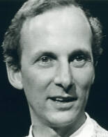
<br><b><font face="Arial,Helvetica"><font size=-1>Peter Dawkins</font></font></b>
<br><font face="Arial,Helvetica"><font size=-2>(courtesy <a href="http://www.thinkingallowed.com/" >Thinking
Allowed Productions</a>)</font></font></center>

<p><font face="Arial,Helvetica">The following excerpt is from my <i>Thinking
Allowed</i> interview with him:</font>
<blockquote><font face="Arial,Helvetica">One day we went on a retreat,
my wife and I, and on that retreat was a lady who was the secretary of
the Francis Bacon Society in England. She introduced me to Francis Bacon,
who I had not really studied before. I knew of him, but hadn't really bothered
much about him. A great sort of gap in my education, that was. I went away
not really knowing what to do about this.</font>
<p><font face="Arial,Helvetica">And I was woken up with a vivid dream.
Now, I don't often remember dreams, but this one I was woken up to remember.
It was quite vivid. There was a certain gentleman making a certain gesture
that was important in the dream, with a very short message to send to this
lady. So I had to do this at four o'clock in the morning. There was no
way I could not do it. It was a request that could not be refused. I wrote,
and I got a letter back from her by return post saying, "Thank you very
much. I've waited twenty years for this. Now we can begin our work."&nbsp;</font>
<p><font face="Arial,Helvetica">She asked me a series of questions, and
as I read them, suddenly I could answer them, whereas a few days before
it probably would have been alien to me. Something changed in my consciousness
at that time, and it opened the gateway to another level of consciousness,
which I've been working with ever since.</font></blockquote>
<font face="Arial,Helvetica">To me, Dawkin's story is plausible because
it echoes a dream experience that has been relevant to the development
of my own career. That experience took place in 1972 at a time when I was
still a graduate student in criminology at the University of California.
My interest in criminology reflected my fascination with human deviance.
However, I was feeling very uncomfortable studying only negative forms
of deviance. I deeply wanted to reorient my career focus.</font>
<p><font face="Arial,Helvetica">One evening I felt inspired to tell myself,
and to accept without doubt, that I would have a dream which would provide
an answer to my career dilemma. Then I did have such a dream.</font>
<p><font face="Arial,Helvetica">I dreamt that I was visiting some friends
in Berkeley, who were not at home. Knowing where they hid their housekey,
I took the key and let myself into their apartment. I walked into the living
room where I found a `agazine sitting in the middle of the floor. In the
dream it was called Eye (a popular magazine at that time). I picked it
up and began paging through it. While I was dreaming, I had a distinct
feeling of elation. I knew that somehow the answer I was seeking existed
in that magazine.</font>
<p><font face="Arial,Helvetica">I awoke early in the morning and, like
Dawkins, felt drawn to act on the inspiration of the dream. Immediately
I dressed and ran four miles across Berkeley to the apartment I had dreamt
of. My friends were not home, but I did know where they kept their key.
Breaking the bounds of conventionality, I let myself into their home. To
my delight, there was a single magazine in the middle of their living room
floor. It was not called Eye; it was called <i>Focus</i>. And this magazine
literally brought focus to my life. It was the magazine of listener-sponsored
television and radio in San Francisco.</font>
<p><font face="Arial,Helvetica">As I sat there paging through <i>Focus</i>
magazine, I was struck with the idea that I would redirect my career through
involvement with public broadcast media. I applied to volunteer at KPFA-FM,
Berkeley's listener-sponsored radio station -- and within three weeks,
I was asked to host and produce a program twice a week called "The Mind's
Ear."</font>
<p><font face="Arial,Helvetica">Suddenly, I found that my life was transformed.
Every Tuesday and Thursday I had the oportunity to hold intimate, hour-long,
uninterrupted discussions with leaders of the human potential movement,
yogis, scientists, psychics, psychologists, visionaries, humorists, etc.
I felt as though I had found my home in the universe.</font>
<p><font face="Arial,Helvetica">It was this experience that gave me the
confidence to pursue a unique doctoral diploma in parapsychology at the
University of California, Berkeley, and to write the first edition of <i>The
Roots of Consciousness</i>. The inspiration of that dream still motivates
my life twenty-eight years later as I produce the <i>Thinking Allowed</i>
television series and prepare this internet edition.</font>
<p><font face="Arial,Helvetica">My own dream experience certainly does
not reflect a contact with higher intelligence in the romanticized or stereotyped
manner characteristic of theosophical and rosicrucian legend. It does suggests
a synchronistic connection (which implies some higher intelligence) that
has been integrated into the movements and actions of my life pattern.</font>
<br>&nbsp;
<p><br>
<center>
<p><b><font face="Arial,Helvetica">References</font></b></center>

<p><font face="Arial,Helvetica">. Kenneth Demarest, "The Winged Power,"
in Charles Muses &amp; Arthur M. Young (eds.), <i>Consciousness and Reality</i>.
New York: Avon, 1972, p. 351. The accurate recording of the event referred
to is quite veiled as the only preserved records come from Syncellus in
Greek and Eusebius in Latin, both quoting the Greek chronicler Alexander
Polyhistor, who is quoting from Berosus, who is in turn quoting from more
ancient texts. This article tracing the esoteric symbology of the winged
gods appears in an anthology by the editors of the <i>Journal for the Study
of Consciousness</i>.</font>
<p><font face="Arial,Helvetica">. D. D. Home, <i>Lights and Shadows of
Spiritualism</i>.</font>
<p><font face="Arial,Helvetica">London: Virtue &amp; Co., 1878, p. 77.
Actually Home is quoting directly from Augustine, but neglected to acknowledge
the specific source. It's interesting to note that the nineteenth century
medium placed himself in the same tradition as the saint.</font>
<p><font face="Arial,Helvetica">1. Idries Shah, <i>Oriental Magic</i>.
New York: Philosophical Library, 1956, pp. 61-2. Hundreds of these delightful
Sufi tales have been recorded and translated by Shah, who is considered
a spiritual father to story lovers throughout the world. It is said that
one can develop inwardly by merely listening to these "teaching stories."</font>
<p><font face="Arial,Helvetica">. Irina Tweedie, Spiritual Training (#S058),
in Personal and Spiritual Development (#Q184), videotapes available from
Thinking Allowed Productions, Berkeley, CA.</font>
<p><font face="Arial,Helvetica">. Robert Frager, Common Threads in Mysticism
(#S050) in Mystical Paths (#Q244), videotapes available from Thinking Allowed
Productions, Berkeley, CA.</font>
<p><font face="Arial,Helvetica">. William Rodarmor, "The Secret Life of
Swami Muktinanda: Abuses of Power in the Ashmam of the 'Guru's Guru,'"
<i>Co-Evolution
Quarterly</i>, Winter 1983, pp. 104-111.</font>
<p><font face="Arial,Helvetica">. Katy Butler, "Events Are the Teacher:
A Buddhist Community Asks Its Leader to Stop," <i>Co-Evolution Quarterly</i>,
Winter 1983, pp. 112-123.</font>
<p><font face="Arial,Helvetica">. Unrestrained endorsements of Love-Ananda's
teachings and books have come from Ken Wilbur, Willis Harman, Charles Tart,
Fred Alan Wolf, Ken Wilbur, Irina Tweedie, Lee Sannella, and Larry Dossey
among others.</font>
<p><font face="Arial,Helvetica">. Heart-Master Da Love-Ananda, <i>The Basket
of Tolerance: A Guide to Perfect Understanding of the One and Great Tradition
of Mankind</i>. Second prepublication edition. Clearlake, CA: Free Daist
Communion, 1989.</font>
<p><font face="Arial,Helvetica">. Heart-Master Da Free John, <i>The Dawn
Horse Testament</i>. San Rafael, CA: Dawn Horse Press, 1985.</font>
<p><font face="Arial,Helvetica">. Da Free John, <i>The Knee of Listening</i>.
Clearlake, CA: Dawn Horse, Press, 1972, 1988.</font>
<p><font face="Arial,Helvetica">. Franklin Jones, <i>The Method of the
Siddhas</i>. Clearlake, CA: Dawn Horse Press, 1973, 1988.</font>
<p><font face="Arial,Helvetica">. Also spelled Kabala, Kabbalah, Qabala,
etc.</font>
<p><font face="Arial,Helvetica">. Charles Ponce, <i>Kabbalah</i>. San Francisco:
Straight Arrow, 1973.</font>
<p><font face="Arial,Helvetica">. MERU Foundation, "The MERU Project: A
Geometric Metaphor for Transcendence, 1989. (P. O. Box 1738, San Anselmo,
CA 94960)</font>
<p><font face="Arial,Helvetica">. Emmanuel Swedenborg, <i>The Heavenly
Arcana, Vol. II</i>. New York: American Swedenborg Pub. Soc., 1873, pp.
114-121.</font>
<p><font face="Arial,Helvetica">. Wilson Van Dusen, <i>The Presence of
Other Worlds</i>. New York: Harper &amp; Row, 1974. A sensitive biography
of Swedenborg. Formerly the chief psychologist at a mental hospital in
California, Van Dusen began to treat the hallucinations of his patients
as if they were spirits. The experiment worked. In fact, he hypothesized
that he was encountering the very same world of spirits as described in
the encyclopediac writings of Swedenborg.</font>
<p><font face="Arial,Helvetica">. C. D. Broad, <i>Religion, Philosophy
and Psychical Research</i>. New York: Harcourt Brace, 1953, pp. 115-116.
The case for Swedenborg's clairvoyance is presented by the Emmanuel Kant
in a letter sent to Fraulein von Knobloch. Later, in an anonymously published
manifesto, Kant essentially retracted his support of the claims for Swedenborg.
The evidence one way or another is quite shaky. Broad, an eminent philosopher
of this century, demonstrated that Kant, undoubtedly a great thinker, was
nevertheless, a careless psychical researcher. This book is useful for
its examination of the philosphical implications of psi.&nbsp;</font>
<p><font face="Arial,Helvetica">. G. Stanley Hall, <i>Founders of Modern
Psychology</i>. New York: D. Appleton &amp; Company, 1924, pp. 129-130.
An innovative American psychologist, Hall studied with many of the German
pioneers, such as Fechner, about whom he writes. This book touches on the
human side of psychology's birth as a science.</font>
<p><font face="Arial,Helvetica">. Ibid, p. 148-149.</font>
<p><font face="Arial,Helvetica">. Ibid, p. 151.</font>
<p><font face="Arial,Helvetica">. Richard Hodgson, "Report of the Committee
Appointed to Investigate Phenomena Connected with the Theosophical Society,"
<i>Proceedings
of the Society for Psychical Research, Part IX</i>, December 1885.</font>
<p><font face="Arial,Helvetica">. Victor A. Endersby, <i>The Hall of Magic
Mirrors</i>. New York: Carlton Press, 1969. Delightfully written with a
consistent sense of humor, this book is now difficult to obtain.</font>
<p><font face="Arial,Helvetica">. Judith Skutch Whitson, A Course in Miracles
(#S360), in Channels and Channeling (#Q214), videotapes available from
Thinking Allowed Productions, Berkeley, CA.</font>
<p><font face="Arial,Helvetica">. J. Allen Hynek, <i>The UFO Experience</i>.</font>
<p><font face="Arial,Helvetica">. Shafica Karagula, <i>Breakthrough to
Creativity</i>. Santa Monica, CA: De Vorss, 1967, pp. 110-113. Dr. Karagula
is a neuropsychiatrist. However, her book lacks the detail and precision
necessary for a scientific evaluation.</font>
<p><font face="Arial,Helvetica">. Peter Dawkins, Francis Bacon and Western
Mysticism (#S077), in Living Traditions (#Q304), videotapes available from
Thinking Allowed Productions, Berkeley, CA.</font>
<br>&nbsp;</td>
</tr>
</table></center>

<center><b><font face="Arial,Helvetica"><font size=-1> 
 </font></font></b>
<br><b><font face="Arial,Helvetica"><font size=-1> 
 </font></font></b><font face="Arial,Helvetica"><a href="../index.html" ></a></font>
<p><b><font face="Arial,Helvetica"><font size=-1><a href="../index.htm" >Return
to <i>Roots of Consciousness</i> Contents</a></font></font></b></center>

</body>
</html>
